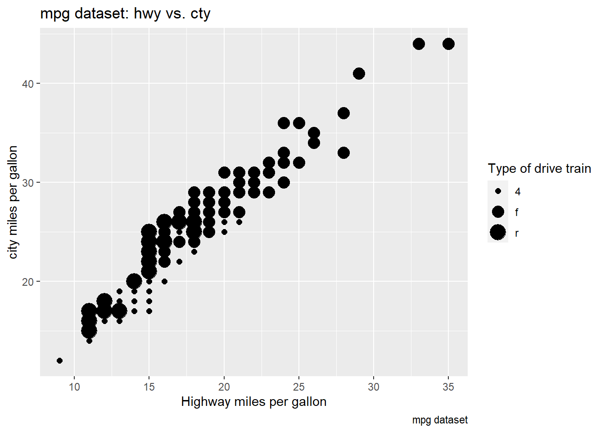
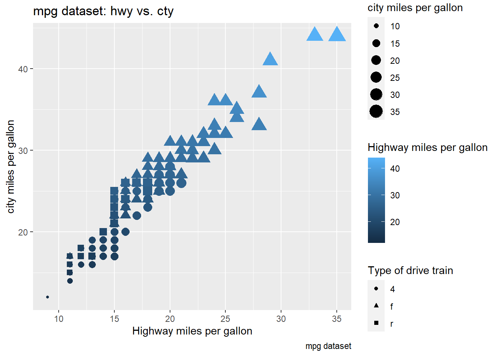
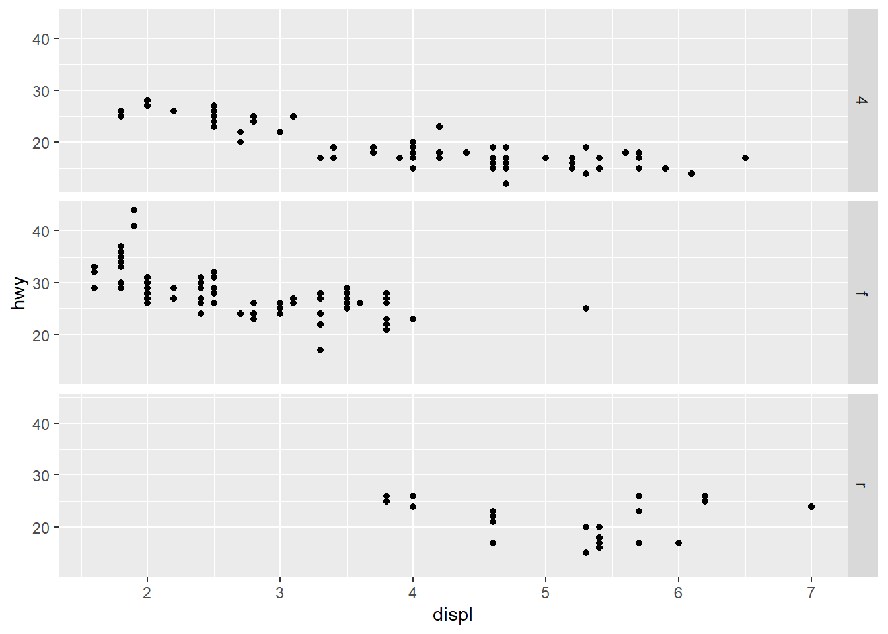
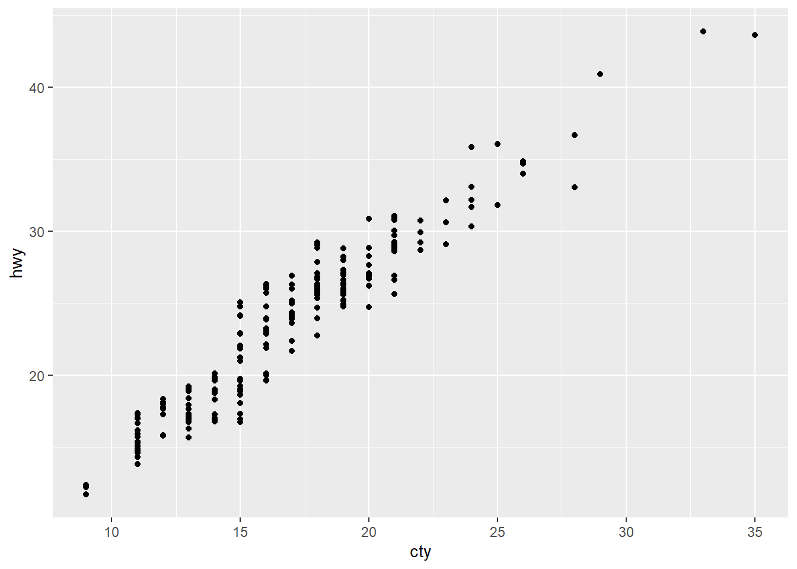
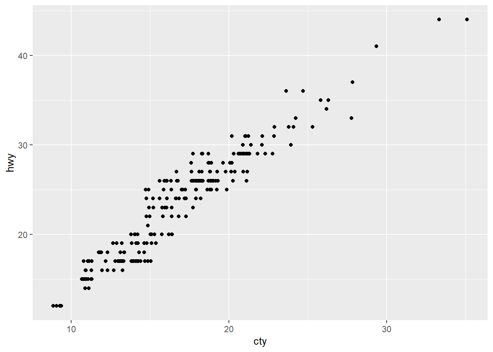
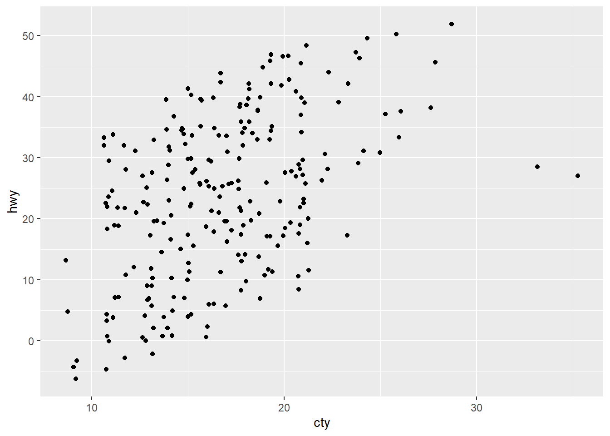

WG Ch5 Exercise Solutions
Rachel Lee
Last compiled: 2021-09-24 16:46:00
I write and update the solutions everyday. Please let me know of any typos.
For Week 3: read WG chapters 1-3.
Chapter 3
3.2 Exercises
1. Run ggplot(data = mpg). What do you see?
library(tidyverse)
library(dplyr)
library(ggplot2)
ggplot(data = mpg)
This is an empty plot since no layers were added with geom function.
2. How many rows are in mtcars? How many columns?
nrow(mtcars)## [1] 32ncol(mtcars)## [1] 11There are 32 rows and 11 columns in mtcars.
3. What does the drv variable describe? Read the help for ?mpg to
find out.
# ?mpgdrv is the type of drive train, where f = front-wheel drive, r = rear wheel drive, 4 = 4wd.
4. Make a scatterplot of hwy versus cyl.
ggplot(mpg, aes(x = cyl, y = hwy)) +
geom_point()
5. What happens if you make a scatterplot of class versus drv?
Why is the plot not useful?
ggplot(mpg, aes(x = class, y = drv)) +
geom_point()A scatter plot is not a useful here because both drv and class are categorical variables. Scatterplots are commonly used to visualize two continuous variables using visual marks mapped to a two-dimensional Cartesian space. Hence, the scatterplot here shows the limitation of managing two categorical variables. This is largely because categorical variables are typically stored as a small number of values. Within the mpg dataset, we can see that class variables holds 7 types of cars, and cyl holds 4 types of cylinders. Therefore, there will only be 21 points mapped on the scatterplot.
mpg %>% distinct(class) # or unique(mpg$class)## # A tibble: 7 x 1
## class
## <chr>
## 1 compact
## 2 midsize
## 3 suv
## 4 2seater
## 5 minivan
## 6 pickup
## 7 subcompactmpg %>% distinct(cyl) # or unique(mpg$cyl)## # A tibble: 4 x 1
## cyl
## <int>
## 1 4
## 2 6
## 3 8
## 4 5
3.3 Exercises
1. What’s gone wrong with this code? Why are the points not blue?
ggplot(data = mpg) +
geom_point(mapping = aes(x = displ, y = hwy, color = "blue"))
The color argument is defined as part of the mapping. Therefore, it is being argued as an aesthetic. This can be corrected as below:
ggplot(data = mpg) +
geom_point(mapping = aes(x = displ, y = hwy), color = "blue")
Or,
ggplot(data = mpg, aes(x = displ, y = hwy)) +
geom_point(colour = "blue")
2. Which variables in mpg are categorical? Which variables are continuous? (Hint: type ?mpg to read the documentation for the dataset). How can you see this information when you run mpg?
head(mpg, 10) # or glipse(mpg)## # A tibble: 10 x 11
## manufacturer model displ year cyl trans drv cty hwy fl class
## <chr> <chr> <dbl> <int> <int> <chr> <chr> <int> <int> <chr> <chr>
## 1 audi a4 1.8 1999 4 auto~ f 18 29 p comp~
## 2 audi a4 1.8 1999 4 manu~ f 21 29 p comp~
## 3 audi a4 2 2008 4 manu~ f 20 31 p comp~
## 4 audi a4 2 2008 4 auto~ f 21 30 p comp~
## 5 audi a4 2.8 1999 6 auto~ f 16 26 p comp~
## 6 audi a4 2.8 1999 6 manu~ f 18 26 p comp~
## 7 audi a4 3.1 2008 6 auto~ f 18 27 p comp~
## 8 audi a4 quattro 1.8 1999 4 manu~ 4 18 26 p comp~
## 9 audi a4 quattro 1.8 1999 4 auto~ 4 16 25 p comp~
## 10 audi a4 quattro 2 2008 4 manu~ 4 20 28 p comp~My initial screening is that Variables with <chr> are categorical, those with <dbl> and <int> are continuous. If you take a closer look at the dataset, cyl, disp can be treated as categorical since there are categories of values the cars are stored under. year, city, and hwydiscrete variables, but we can decide to treat it as continuous variables.
3. Map a continuous variable to color, size, and shape. How do these aesthetics behave differently for categorical vs. continuous variables?
ggplot(mpg, aes(x = cty, y = hwy, color = drv)) +
geom_point() +
labs(title = "mpg dataset: hwy vs. cty",
caption = "mpg dataset",
x = "Highway miles per gallon",
y = "city miles per gallon",
color = "Type of drive train")It’s intuitive that cty and hwy will show a positive linear relationship. The color mapping is set to drv, which is a categorical variable.
ggplot(mpg, aes(x = cty, y = hwy, color = cyl)) +
geom_point() +
labs(title = "mpg dataset: hwy vs. cty",
caption = "mpg dataset",
x = "Highway miles per gallon",
y = "city miles per gallon",
color = "Number of cylinders") Now we set our color mapping to cyl, a continuous variable. The difference between mapping color to a categorical vs continuous variables is the legend. For categorical variables, distinct categories are created as the legend, while gradient scale is created for continuous variables.
Now, let’s take a look at the difference of categorical and continuous variables being mapped to size:
ggplot(mpg, aes(x = cty, y = hwy, size = drv)) +
geom_point() +
labs(title = "mpg dataset: hwy vs. cty",
caption = "mpg dataset",
x = "Highway miles per gallon",
y = "city miles per gallon",
size = "Type of drive train")
ggplot(mpg, aes(x = cty, y = hwy, size = cyl)) +
geom_point() +
labs(title = "mpg dataset: hwy vs. cty",
caption = "mpg dataset",
x = "Highway miles per gallon",
y = "city miles per gallon",
size = "Number of cylinders")When mapped to size, the sizes of the points vary continuously as a function of their size.
Now, let’s assign the different variables types to shape.
ggplot(mpg, aes(x = cty, y = hwy, shape = drv)) +
geom_point() +
labs(title = "mpg dataset: hwy vs. cty",
caption = "mpg dataset",
x = "Highway miles per gallon",
y = "city miles per gallon",
shape = "Type of drive train") When the categorical variable is mapped to shape, three types of drive train are assigned to different pointer shapes, and are mapped on the graph accordingly. Intuitively, we will not be able to map a continuous variable to shape. If you do, you will get the following error message from R:
Error: A continuous variable can not be mapped to shape Runrlang::last_error()to see where the error occurred.
4. What happens if you map the same variable to multiple aesthetics?
ggplot(mpg, aes(x = cty, y = hwy, size = cty, color = hwy, shape = drv)) +
geom_point() +
labs(title = "mpg dataset: hwy vs. cty",
caption = "mpg dataset",
x = "Highway miles per gallon",
y = "city miles per gallon",
size = "city miles per gallon",
color = "Highway miles per gallon",
shape = "Type of drive train") In the plot above, I mapped cty to both x-axis and size, and hwy to y-axis and color. The R runs and produces the messy graph due to redundant information. This is not advised - mapping a single varialbe to multiple aesthetics is a bad practice and should be avoided.
5. What does the stroke aesthetic do? What shapes does it work with? (Hint: use ?geom_point)
# ?geom_point
ggplot(mpg, aes(x = displ, y = cty)) +
geom_point(shape = 23, color = "#CC79A7", fill = "#F0E442", size = 3, stroke = 2)The stroke aesthetically modifies the width of the border for shapes. It works with shapes numbering 21 through 25, which are shapes that take the fill command with a specific color.
6. What happens if you map an aesthetic to something other than a variable name, like aes(colour = displ < 5)? Note, you’ll also need to specify x and y.
ggplot(mpg, aes(x = cty, y = hwy, color = displ < 5)) +
geom_point()You are able to specify equations as well as expressions for aesthetic mappings. In this case, displ < 5 will return either TRUE or FALSE.
3.5 Exercises
1. What happens if you facet on a continuous variable?
ggplot(mpg, aes(x = displ, y = hwy)) +
geom_point() +
facet_wrap(. ~ hwy)ggplot(mpg, aes(x = displ, y = hwy)) +
geom_point() +
facet_grid(. ~ hwy)The primary use of facets is to add another categorical variable to your plot. The variable that you pass to facet_wrap() should be discrete. If you pass continuous variable, then it is converted to a categorical variable, and the plot will contain a facet for each distinct value.
2. What do the empty cells in plot with facet_grid(drv ~ cyl) mean? How do they relate to this plot?
ggplot(data = mpg) +
geom_point(mapping = aes(x = drv, y = cyl))
ggplot(data = mpg) +
geom_point(mapping = aes(x = cty, y = hwy)) +
facet_grid(drv ~ cyl)The scatterplot of drv and cyl shows empty plots, and the empty cells matches where combinations of the two variables have no observations.
3. What plots does the following code make? What does . do?
ggplot(data = mpg) +
geom_point(mapping = aes(x = displ, y = hwy)) +
facet_grid(drv ~ .)
ggplot(data = mpg) +
geom_point(mapping = aes(x = displ, y = hwy)) +
facet_grid(. ~ cyl)
Everything on the left of the ~ will split according to rows, and everything on the right will split to columns. The . on the right hand side of the formula (. ~ cyl) fixes the cyl variable on the x-axis. If you want to flip the facets, this can be done as cyl ~ ..
4. Take the first faceted plot in this section:
ggplot(data = mpg) +
geom_point(mapping = aes(x = displ, y = hwy)) +
facet_wrap(~ class, nrow = 2) What are the advantages to using faceting instead of the color aesthetic? What are the disadvantages? How might the balance change if you had a larger dataset?
What are the advantages to using faceting instead of the color aesthetic? What are the disadvantages? How might the balance change if you had a larger dataset?
Let’s take the provided code, but add the color aesthetic instead of using faceting:
ggplot(data = mpg) +
geom_point(mapping = aes(x = displ, y = hwy, color = trans))The advantage of adding color mapping is that we are able to add more information to the graph. For instance, we are now able to distinguish between the different types of transmission between engine displacement and highway miles per hour variables across type of cars. Note that using the color aesthetic can work against if there are many categories. In this case, readers may have a hard time differentiating the colors between manual(m5) and manual(m6).
The disadvantage of using faceting instead of the color aesthetic is the difficulty of comparing the observations between categories plotted across different plots. It is much easier to interpret the graph if the observations are plotted on the same x- and y-scales.
5. Read ?facet_wrap. What does nrow do? What does ncol do? What other options control the layout of the individual panels? Why doesn’t facet_grid() have nrow and ncol arguments?
# ?facet_wrap
# ?facet_gridnrow and ncol refers to the number of rows and columns used when laying out the facets. These arguments are needed given that facet_wrap() only takes one variable to create facets. The arguments does not exist for facet_grid() because the function determines the number of rows and columns from the unique values of the specified variables.
6. When using facet_grid() you should usually put the variable with more unique levels in the columns. Why?
The simple reason is that there is more space for columns if the plots are laid out horizontally.
3.6 Exercises
1. What geom would you use to draw a line chart? A boxplot? A histogram? An area chart?
geom_line(): line chartgeom_boxplot(): boxplotgeom_histogram(): histogramgeom_area(): area chart
2. Run this code in your head and predict what the output will look like. Then, run the code in R and check your predictions.
geom_point() will create a scatterplot with displ on the x-axis, hwy on the y-axis, drv grouped and colored. geom_smooth() will create a smooth line, and se = FALSE will suppress standard errors.
ggplot(data = mpg, mapping = aes(x = displ, y = hwy, color = drv)) +
geom_point() +
geom_smooth(se = FALSE)
3. What does show.legend = FALSE do? What happens if you remove it? Why do you think I used it earlier in the chapter?
The code below is from this chapter where the authors have show.legend = FALSE.
ggplot(data = mpg) +
geom_smooth(
mapping = aes(x = displ, y = hwy, colour = drv),
show.legend = FALSE
)
Here is the same code with show.legend = TRUE:
ggplot(data = mpg) +
geom_smooth(
mapping = aes(x = displ, y = hwy, colour = drv),
show.legend = TRUE
)
Adding the legend would be beneficial if the authors decided to use a single graph. However, with three graphs adjacent to each other, adding a legend to only the last graph may confuse readers, as well as offset the plot sizes. Moreover, the authors intention of using the three graphs altogether was to show the difference adding extra group or color mappings to aesthetics. Therefore, legend was not necessary.
4. What does the se argument to geom_smooth() do?
ggplot(data = mpg, mapping = aes(x = displ, y = hwy)) +
geom_point(mapping = aes(color = class)) +
geom_smooth(data = filter(mpg, class == "subcompact"), se = FALSE)
ggplot(data = mpg, mapping = aes(x = displ, y = hwy)) +
geom_point(mapping = aes(color = class)) +
geom_smooth(data = filter(mpg, class == "subcompact"), se = TRUE)As it can be seen from the two graphs, the se argument adds the standard error bands to the lines.
5. Will these two graphs look different? Why/why not?
ggplot(data = mpg, mapping = aes(x = displ, y = hwy)) +
geom_point() +
geom_smooth()
ggplot() +
geom_point(data = mpg, mapping = aes(x = displ, y = hwy)) +
geom_smooth(data = mpg, mapping = aes(x = displ, y = hwy))
The first set of code has the mapping: aes(x = displ, y = hwy), which is passed down to geom_point() and geom_smooth(). For the second set of code, it still uses the same mapping for both geom_point() and geom_smooth() through specification. Therefore, the two graphs will look identical.
6. Recreate the R code necessary to generate the following graphs.
ggplot(mpg, aes(x = displ, y = hwy)) +
geom_point() +
geom_smooth(se = FALSE)
ggplot(mpg, aes(x = displ, y = hwy)) +
geom_point() +
geom_smooth(aes(group=drv), se = FALSE)ggplot(mpg, aes(x = displ, y = hwy, color = drv)) +
geom_point() +
geom_smooth(se = FALSE)
ggplot(mpg, aes(x = displ, y = hwy)) +
geom_point(aes(color = drv)) +
geom_smooth(se = FALSE)
ggplot(mpg, aes(x = displ, y = hwy)) +
geom_point(aes(color = drv)) +
geom_smooth(aes(linetype = drv), se = FALSE)ggplot(mpg, aes(x = displ, y = hwy)) +
geom_point(size = 5, color = "white") +
geom_point(aes(color = drv))
3.7 Exercises
1. What is the default geom associated with stat_summary()? How could you rewrite the previous plot to use that geom function instead of the stat function?
I assume this is what the authors mean by previous plot:
ggplot(data = diamonds) +
stat_summary(
mapping = aes(x = cut, y = depth),
fun.min = min,
fun.max = max,
fun = median
)
The documentation available by ?stat_summary shows that geom = "pointrage". The documentation for?geom_pointrange reads that it is various ways of representing vertical interval defined by x, ymin, and ymax. So here is what we can write using the geom_pointrange() instead of the stat_summary() function:
ggplot(data = diamonds) +
geom_pointrange(
mapping = aes(x = cut, y = depth),
stat = "summary",
fun = median,
fun.min = min,
fun.max = max
)
2. What does geom_col() do? How is it different to geom_bar()?
There are two types of bar charts: geom_bar() and geom_col(). geom_bar() makes the height of the bar proportional to the number of cases in each group (or if the weight aesthetic is supplied, the sum of the weights). If you want the heights of the bars to represent values in the data, use geom_col() instead. geom_bar() uses stat_count() by default: it counts the number of cases at each x position. geom_col() uses stat_identity(): it leaves the data as is.
3. Most geoms and stats come in pairs that are almost always used in concert. Read through the documentation and make a list of all the pairs. What do they have in common?
The following table is a list of all the pairs I compiled. There was a lesson from DataCamp that covered this question. Also, this site contains list of all geom_ and stat_ functions available in ggplot2.
| Geom_ | Stat_ | Common Description |
|---|---|---|
geom_bar(), geom_col() |
stat_count() |
Bar charts |
geom_bin2d() |
stat_bin2d() |
Heatmap of 2d bin counts |
geom_boxplot() |
stat_boxplot() |
A box and whiskers plot (in the style of Tukey) |
geom_contour(), geom_contour_filled() |
stat_contour(), stat_contour_filled() |
2D contours of a 3D surface |
geom_count() |
stat_sum() |
Count overlapping points |
geom_density() |
stat_density(), |
Smoothed density estimates |
geom_density_2d() |
stat_density_2d() |
Contours of a 2D density estimate |
geom_dotplot() |
stat_bindot() |
Dot plot |
geom_function() |
stat_function() |
Draw a function as a continuous curve |
geom_hex() |
stat_bin_hex() |
Hexagonal heatmap of 2d bin counts |
geom_freqpoly(), geom_histogram() |
stat_bin() |
Histograms and frequency polygons |
geom_qq(), geom_qq_line() |
stat_qq(), stat_qq_line() |
A quantile-quantile plot |
geom_quantile() |
stat_quantile() |
Quantile regression |
geom_sf() |
stat_sf() |
Visualize sf objects |
geom_smooth() |
stat_smooth() |
Smoothed conditional means |
geom_violin() |
stat_violin() |
Violin plot |
4. What variables does stat_smooth() compute? What parameters control its behaviour?
Try running ?stat_smooth() on your R console. stat_smooth() computes the following variables: - y or x: Predicted value - ymin or xmin: Lower pointwise confidence interval around the mean - ymax' orxmax: Upper pointwise confidence interval around the mean -se`: Standard error
The parameters controlling the behavior of stat_smooth(): - method: Smoothing method (function) to use, accepts either NULL or a character vector. - formula: Formula to use in smoothing function. - se: display confidence interval around smooth (TRUE by default) - na.rm: If FALSE, the default, missing values are removed with a warning. If TRUE, missing values are silently removed. - orientation: The orientation of the layer. - show.legend: NA, the default, includes if any aesthetics are mapped. - method.args: List of additional arguments passed on to the modelling function defined by method.
5. In our proportion bar chart, we need to set group = 1. Why? In other words what is the problem with these two graphs?
ggplot(data = diamonds) +
geom_bar(mapping = aes(x = cut, y = after_stat(prop)))
ggplot(data = diamonds) +
geom_bar(mapping = aes(x = cut, fill = color, y = after_stat(prop)))As you can see from the outpu graphs, without group = 1, all the bars end up with the same height. This is because the geom_bar() function assumes that the groups are equal to the x values since the stat computes the counts within the group.
Note: Read about ?after_stat() function. prop refers to percent of points in that panel in the position.
Here is the intended bar graph:
ggplot(data = diamonds) +
geom_bar(mapping = aes(x = cut, y = after_stat(prop), group = 1)) Next section (3.8) explains how you can fill the bars with colors.
Next section (3.8) explains how you can fill the bars with colors.
3.8 Exercises
1. What is the problem with this plot? How could you improve it?
ggplot(data = mpg, mapping = aes(x = cty, y = hwy)) +
geom_point()
Try running dim(mpg). There should be 234 points on this graph, so we know the problem is that points over being over-plotted. We would need to adjust the position of the points.
Setting position = "jitter" fixes this problem.
ggplot(data = mpg, mapping = aes(x = cty, y = hwy)) +
geom_point(position = "jitter")
2. What parameters to geom_jitter() control the amount of jittering?
?geom_jitter() shows two parameters that control the amount of jittering. The width controls the amount of horizontal displacement, and height controls the amount of vertical displacement. You can play around by assigning different values to the two parameters.
ggplot(data = mpg, mapping = aes(x = cty, y = hwy)) +
geom_jitter(width = 0)
ggplot(data = mpg, mapping = aes(x = cty, y = hwy)) +
geom_jitter(height = 0)
ggplot(data = mpg, mapping = aes(x = cty, y = hwy)) +
geom_jitter(width = 20)ggplot(data = mpg, mapping = aes(x = cty, y = hwy)) +
geom_jitter(height = 20)
Note that if you assign 0s to both height and width, the resulting graph will be identical to the one made using geom_point().
ggplot(data = mpg, mapping = aes(x = cty, y = hwy)) +
geom_jitter(height = 0, width = 0)
3. Compare and contrast geom_jitter() with geom_count().
geom_jitter() adds a small amount of random variation to th location of each point. It is a useful way of handling overplotting caused by discreteness in smaller datasets.
geom_count() counts the number of observations at each location, then maps the count to point area. It is also useful when you have discrete data and overplotting issue. Unlike geom_jitter(), geom_count() is able to create different size of the points relative to the number of observations.
ggplot(data = mpg, mapping = aes(x = cty, y = hwy)) +
geom_jitter()ggplot(data = mpg, mapping = aes(x = cty, y = hwy)) +
geom_count()
With the mpg dataset, we see that geom_count() is starting to cause the problem of overplotting again.
We can play around with the color.
ggplot(data = mpg, mapping = aes(x = cty, y = hwy, color = class)) +
geom_jitter()ggplot(data = mpg, mapping = aes(x = cty, y = hwy, color = class)) +
geom_count()
ggplot(data = mpg, mapping = aes(x = cty, y = hwy, color = class)) +
geom_count(position = "jitter")While the graphs did add an additional info of class, none of the graphs seems to solve the overplotting issue.
4. What’s the default position adjustment for geom_boxplot()? Create a visualisation of the mpg dataset that demonstrates it.
?geom_boxplot() shows that the default position adjustment is dodge2. Here is the r code from the previous problem, but using geom_boxplot() instead:
ggplot(data = mpg, aes(x = cty, y = hwy, color = class)) +
geom_boxplot()
3.9 Exercises
1. Turn a stacked bar chart into a pie chart using coord_polar().
Start with a stacked bar chart:
ggplot(mpg, aes(x = factor(1), fill = drv)) +
geom_bar()
Add coord_polar(theta="y") to create pie chart:
ggplot(mpg, aes(x = factor(1), fill = drv)) +
geom_bar(width = 1) +
coord_polar(theta = "y")
2. What does labs() do? Read the documentation.
The labs() allows you to add axis titles, plot titles, and a caption to the plot. I have been using it since the very beginning of this chapter.
Note that labs is not the only way to add titles. Other functions such as xlab(), ylab(), ggtitle() can also be used.
3. What’s the difference between coord_quickmap() and coord_map()?
4. What does the plot below tell you about the relationship between city and highway mpg? Why is coord_fixed() important? What does geom_abline() do?
ggplot(data = mpg, mapping = aes(x = cty, y = hwy)) +
geom_point() +
geom_abline() +
coord_fixed()